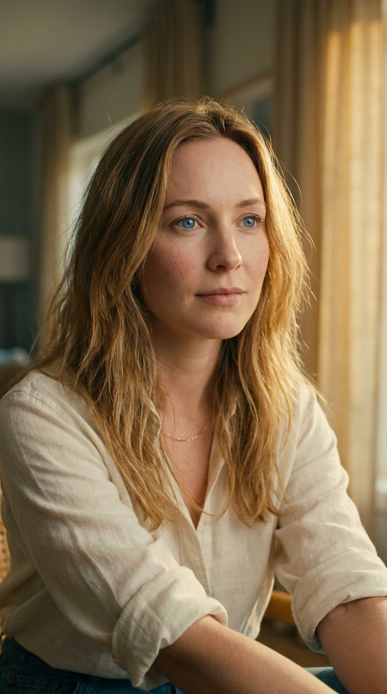
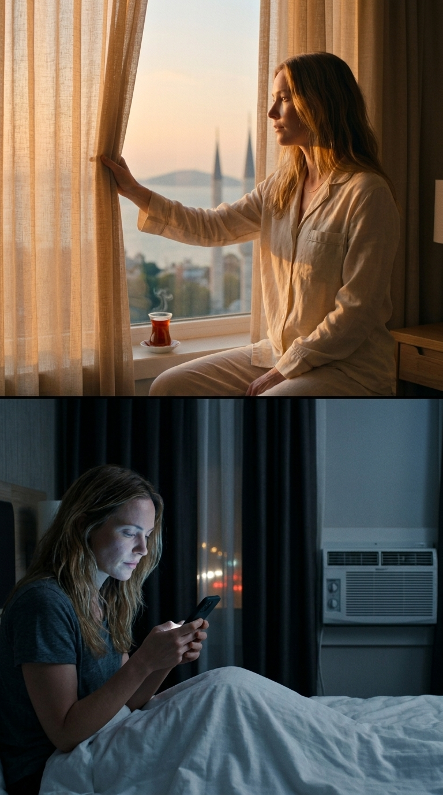
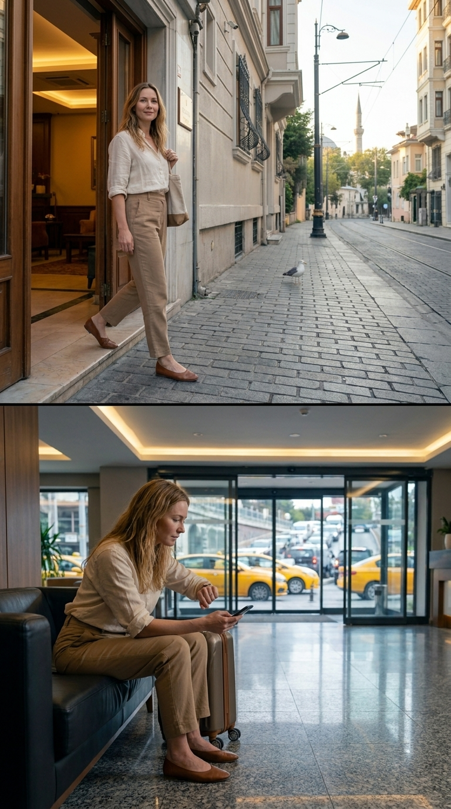
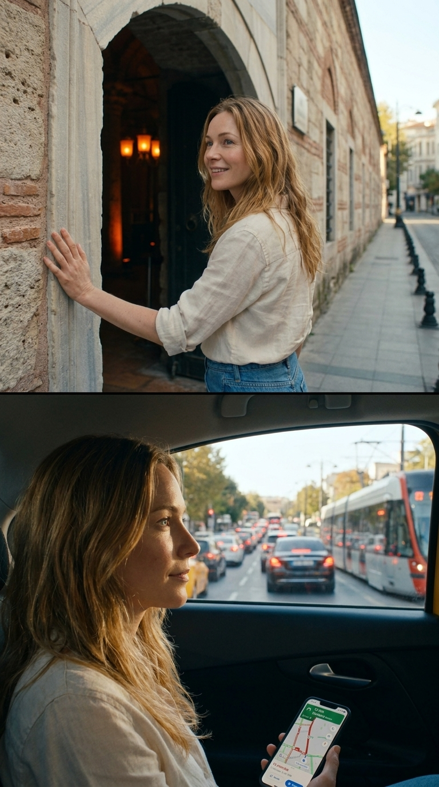
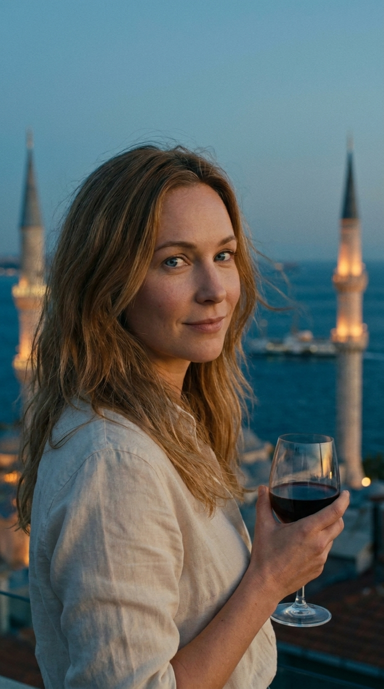
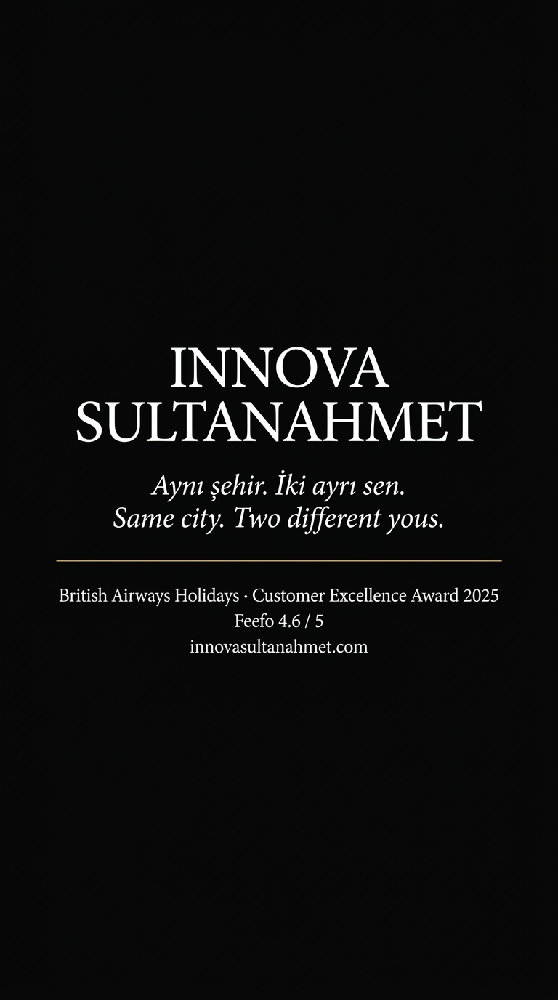

İki
İstanbul.
Innova Sultanahmet için kısa film tadında bir reklam. Aynı şehir, aynı gün, aynı kadın — iki paralel zaman çizgisi. Tek değişken: konakladığı yer.
01 — Big IdeaAynı şehir. İki ayrı sen.
Reklamda ikinci bir otel yok. Rakip yok. Karşılaştırma kendiyle. İzleyici "burada kalmasaydım nasıl olurdu?" sorusunu kafasında kendi soruyor — bu, satışı bağırarak yapmaktan çok daha güçlü.
Bazıları yaşar.
Neden bu çalışıyor
Innova'nın gerçek farkı pırıltılı lobi değil — konum. Yerebatan 100 metre, Sultanahmet Camii 6 dakika, Kapalıçarşı 250 metre. Bu sayıların kuru anlatımı broşür olur. İki paralel hayat anlatımı, izleyiciye sayıyı hissettirir: bir tarafta 100 metre, diğer tarafta 12 kilometre trafik.
Otel ne zaman görünür?
Toplam 80 saniyede sadece 2 saniye: kapıdan çıkış (Sahne 3) ve son rooftop. Geri kalan 78 saniye otelin değerini anlatıyor — ürünün kendisini değil. Bu, premium tonun nedeni.
02 — Görsel DilÜç prensip.
Her sahne aşağıdaki üçü taşımak zorunda. Yoksa kesilir.
İki ışık. İki ruh.
Üst yarı her zaman 5500K sıcak Akdeniz ışığı. Alt yarı 3200K floresan / telefon mavisi. Aynı saat, ters atmosfer.
Karakter kilidi.
Aynı kadın, aynı kıyafet, aynı yüz — 12 sahnenin hepsinde. AI üretim için Gemini 3 Pro Image karakter referansı kullanıldı.
Sayı yerine his.
"100 metre Yerebatan'a" demek yok. Onun yerine: bir tarafta kapıdan çıkıp varış, diğerinde 18 dk trafik. İzleyici sonuca kendi varır.
03 — KarakterMaster referans.
İlk üretilen referans portresi her sonraki sahneye girdi olarak verildi. Yüz, saç, göz rengi, kıyafet — tüm sahnelerde kilitli kaldı.

Solo gezgin · 32
Kuzey Avrupa'dan, ilk kez İstanbul'da. Şehre bağlanması, yorulması, anılarla dönmesi 80 saniyede izleyiciyle paralel ilerler.
- Saç
- Bal sarısı, omuz altı, doğal dalgalı
- Göz
- Açık mavi
- Cilt
- Açık porselen, doğal allık
- Kıyafet
- Krem keten gömlek, kollar dirsekte kıvrık. İnce altın kolye.
- Lens
- 50mm anamorfik · sığ alan derinliği
- Işık
- Doğal sabah, kamera-sağ
- Renk
- Sıcak nötr · gölgelerde hafif teal
İki ayrı sen.
04 — Storyboard12 sahne · vertical 9:16.
Her sahne üst/alt split. Üst — Innova konuğu, sıcak ışık, sakin. Alt — şehrin başka bir yerinde kalan, soğuk ışık, gergin. Tıkla → büyüt.








05 — SenaryoSahne sahne · 80 saniye.
VO satırları sayıları taşımaz; çünkü sayılar sahnede çoktan oynuyor. Üst sütun = Innova hayatı, alt sütun = uzak otel hayatı.
UYANMA
Innova
İpek perdeden süzülen turuncu şafak. Pencere açılır — Marmara, ufukta Adalar, iki minare silueti. Çay buharı. Sessizlik.
Uzak Otel
Çalan alarm. Karanlık oda. Klima sesi. Heavy blackout perde. Telefon ekranı yüze düşen tek ışık.
KAHVALTI
Innova
Rooftop. Türk kahvaltısı. Marmara golden hour. Karşı sandalye boş ama yalnız değil. Ne kuyruk var, ne floresan ışık.
Uzak Otel
Kalabalık büfe. Plastik tabak. Kuyruk. Birinin dirseği omzuna değiyor. Telefon yüz üstü masada.
KAPI vs LOBİ
Innova
Kapı açılır. Tek adım. Sokak. Ayağı taşa değer. 100 metre ötede Yerebatan'ın taş kemerli kapısı. Kuyruk yok. Tek başına bir Medusa.
Uzak Otel
Lobi. Sofa. Ride-share uygulaması: "12 dk." Olur 18. Trafik. Şoför Spotify'da çalan şarkıyı söylüyor.
ANITLAR
Innova
Ayasofya kubbesinin altında — küçücük bir nokta, devasa bir kubbe. Sultanahmet avlusunda güvercinler havalanır slow-motion.
Uzak Otel
Ayasofya kuyruğunun arkasında. Önündeki turist grubu selfie çekiyor. Tur otobüsünün penceresinden caminin geçişi.
BOĞAZ vs ÇARŞI
Innova
Eminönü sahili — vapur düdüğü, martı slow-motion, simit, Galata silüeti. Sonra Kapalıçarşı: bakırcıyla pazarlık, çay bardağı eline tutuşuyor.
Uzak Otel
Hâlâ trafikte. Maps "35 dk Grand Bazaar" diyor. Manzara: dört şeritli yol. Sahil cafe yerine parking lot.
DİNLENME
Innova
Dönüş 4 dakika. Türk hamamının buharı. Bir çift el omzundaki gerginliği bulur. Yüz yumuşar. İlk kez bütün gün — nefes.
Uzak Otel
Yatağa düşer. Ayakkabılar yataktan sarkıyor. Telefon ekranı: 23.847 adım. Gözler kapanmıyor.
GÜN BATIMI
Innova
Rooftop. Marmara'ya inen turuncu güneş. Vapur düdüğü uzakta. Karşı sandalye boş ama "az sonra dolacak" gibi duruyor.
Uzak Otel
Otel barı. Kafeterya ışığı. Kadehte aynı şarap — ama renk floresan altında yanlış. Telefonda fotoğraflar. Hiçbiri istediği gibi çıkmamış.
BİRLEŞME
Innova · Tek Ekran
İki yarı yavaşça birleşir. Sadece üst (Innova) kalır. Kadın ilk kez kameraya döner. Yarı gülümser. Davet eder.
End Card
Siyah perde. Beyaz serif tipografi. BA Holidays Customer Excellence Award rozeti. Tek bir vapur düdüğü. Karartma.
06 — Müzik & SesBir tema. İki versiyon.
Aynı melodi, iki ruh hali. Üst için ney + akustik. Alt için aynı melodinin elektronik gergin remix'i. Custom besteleme — telifsiz, özgün.
Üst Şerit
Ana enstrüman: Ney solo, sıcak alt-mid registerinde
Perküsyon: Yumuşak el davulu, oud arka plan
Tempo: 60–80 BPM, nefes alır gibi
Foley: Çay tıngırtısı, ezan (uzak), güvercin kanadı, su damlası, vapur düdüğü
Alt Şerit
Ana enstrüman: Aynı ney melodisi, distortion ile
Perküsyon: Klakson, klima drone, telefon bildirimi
Tempo: Aynı 60 BPM ama dağılmış — ritim oturmaz
Foley: Trafik, floresan zırıltısı, asansör, alarm
VO — Türkçe
Olgun erkek, sıcak alt-mid. Halil Ergün / Çetin Tekindor dokusu. Mid-forward mix. Şair değil, hikâyeci ton.
VO — English
Neutral accent, BBC tonu. Hugh Bonneville alt registeri. Aynı tempoyu Türkçe ile lock'lı senkron tutmak için yumuşak compression.
07 — KrediBin gerçek misafir.
Senaryoda krediler kapanışta gelir, gizlenmez. "Bin İngiliz misafirden 4.6 puan" — anonim editöryal listeden çok daha güçlü bir güvendir.
Customer Excellence Award
Neden bu kredi, "Top 19" değil?
Araştırmamız BA High Life "Top 19 Hotels" iddiasını doğrulayamadı. Bunun yerine somut belge taşıyan rozeti kullanıyoruz: Customer Excellence Award 2025 · Feefo 4.6/5.
Pratikte daha güçlü: editöryal liste anonim, müşteri puanı somut. "Biz değil — bin İngiliz misafir söylüyor" mesajı, satışın güven omurgasını kurar.
Ek doğrulanmış: TripAdvisor Travelers' Choice ✓ · Booking 9.0/10 (471 yorum) ✓
08 — Çekim İzinleri & BütçeSultanahmet'te neyin ne kadarı?
Her sahne için izin mercii ayrı, süreç ayrı, ücret ayrı. Aşağıda doğrulanmış bilgi + sektör pratiği fiyat aralıkları. Kesin rakam fixer quote'una bağlı.
Hikayeyi Değiştiren 3 Bulgu
1. Topkapı Sarayı'nda reklam çekimi yasak (Milli Saraylar 2026 yönetmeliği). 2. Yerebatan Sarnıcı 1 Nisan 2026'da Vakıflar Genel Müdürlüğü'ne devredildi — yetki değişikliği yeni. 3. Ayasofya + Sultanahmet Camii ibadethane statüsünde — iç mekân ticari çekim pratikte reddedilir.
| Lokasyon | İzin Mercii | Süreç | Ticari Reklam | Tahmini Maliyet (TL) |
|---|---|---|---|---|
| Topkapı Sarayı (iç + bahçe) | Milli Saraylar Başkanlığı | — | YASAK | — |
| Ayasofya (iç) | Diyanet İşleri | 4–6 hafta | Düşük olasılık | Tarife yok / case-by-case |
| Ayasofya (dış cephe) | Fatih Bld. + İl Komisyonu | 2–3 hafta | Mümkün | 100K – 300K |
| Sultanahmet Camii (avlu) | Diyanet + Vakıflar | 3–4 hafta | Sınırlı | 50K – 200K |
| Yerebatan Sarnıcı | Vakıflar Genel Müdürlüğü (yeni) | 6–8 hafta | Geçmişte verildi | 500K – 1.500K |
| Kapalıçarşı (koridor + dükkân) | Esnaflar Derneği + Fatih Bld. | 2–3 hafta | Mümkün | 200K – 500K |
| Eminönü sahil + Galata | İBB + Fatih + Beyoğlu + Sahil Güv. | 2–3 hafta | Mümkün | 150K – 400K |
| Drone — Sultanahmet özel zone | SHGM + Valilik + DHMİ + Askeri | 10+ iş günü | Çoğu zaman red | 300K – 600K (helikopter alt.) |
| Genel sokak (Fatih) | İl Çekim Koordinasyon Komisyonu | 2 hafta | Mümkün | 80K – 200K |
| Fixer / Line Producer (5 gün) | — | — | — | 250K – 500K |
| Sigorta (3. şahıs + ekipman) | — | — | — | 100K – 200K |